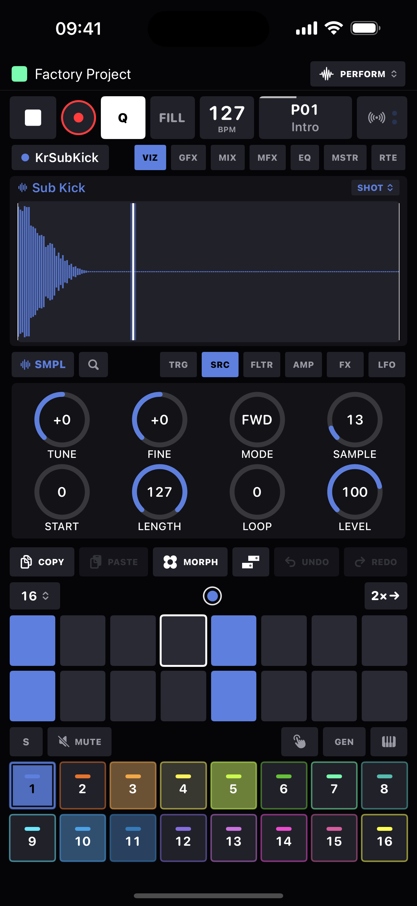
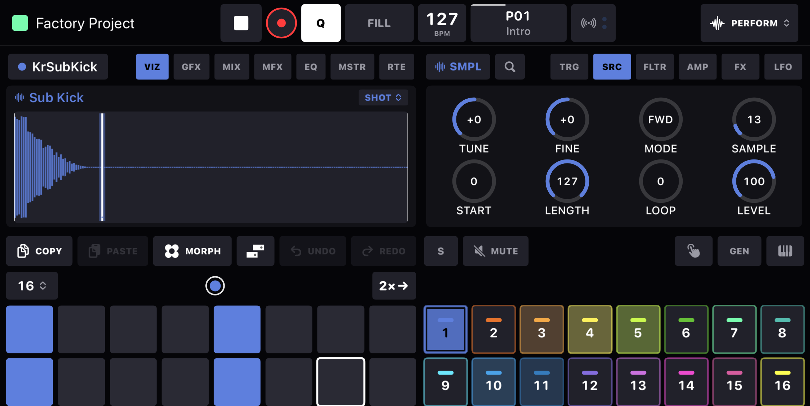

HeartBeat is a 16-track sequencer, sampler and synth studio for iPhone - built for hands-on pattern writing: parameter locks, trig conditions, live sampling and a board full of devices. Upright or on its side.

Parameter locks on every knob, trig conditions, retrigs, micro-timing and six-voice chords - per step, per track. Loop any section and every track follows in musical time. Sequencer →
Six sampler modes - one-shot, repitch, warp, stretch, slice, grid - plus a two-oscillator mono synth with sync and cross-mod, poly, FM, wavetable and acid synths, a drum synthesizer and a plucked string. Devices →
A full note editor over the same trigs: marquee selection, group drag, per-voice gates, triplet grids, loop braces on the ruler and its own undo stack. Piano roll →
Record from mic, input or resample the master - then slice it, warp it to tempo, or play it chromatically. Sampling →
Tempo-synced LFOs on any knob, recordable automation lanes, and A/B scene morphing you can ride live - with an ORIGINAL pad that always remembers the sound you built by hand. Modulation →
Per-track drive, chorus and ring-mod; shared delay and reverb; DJ FX, EQ, compression and a master chain. FX & mixer →
Plug keyboards straight in over USB, Bluetooth or the network, learn any control from any controller, route every track to hardware or to another track, and stream each track to Ableton Link. MIDI & Link →
Self-contained project folders you can see in the Files app and in iCloud Drive, sound presets, a factory project to start from, and a one-tap song export to WAV. Projects →
Turn the phone and the board becomes a two-by-two grid: transport in the header, the display beside the knobs, the steps beside the track pads - every control at full size.
